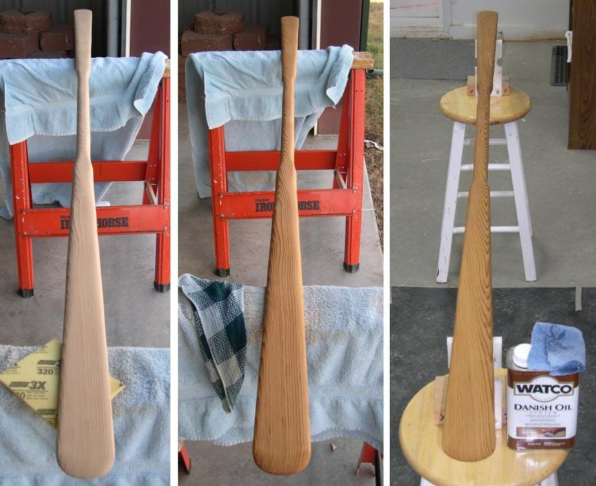

| Greenland Paddle Construction | Menu Last Page Next Page |
|
 Final light sanding is done with a 150 - 320 grit sanding pad. After sanding, the paddle is wiped down with a wet cloth and allowed to dry, raising the wood grain. The paddle is then lightly sanded with a 320 pad. Repeat this wetting down and sanding process. Wipe down with a tack cloth prior to finishing. One or two coats of Watco Danish oil are applied with a cloth following directions on the can. After test paddling, sand the blade again if needed and apply an additional coat or two of Danish oil. |
|